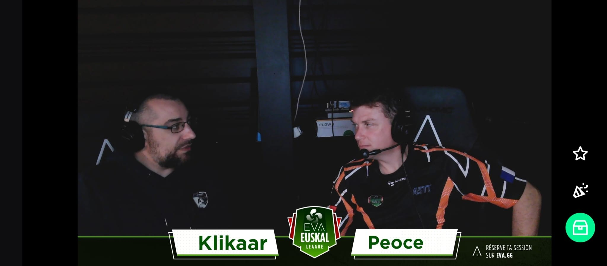

Tournois Safran Débutant . Rejoyez l'arène, et montrer qui est le boss !!
Après des semaines de qualifications intenses, les meilleures équipes s'affrontent enfin pour monter sur la première marche du podium.
Un show commenté par un duo explosif aux micro pour vous faire vivre chaque action avec une ferveur inégalée.
Les joueurs reverront le chat en replay ! Vos messages d'encouragement et vos émojis feront toute la différence pendant les matchs.
Lancement du live Twitch, accueil des spectateurs et présentation de la soirée par les casters.
Début des affrontements en direct sous l'œil avisé de Klikaar et SupAnimAl.
Sacre des champions SAFRAN et débrief à chaud avec les équipes gagnantes.

Le grand Klikaar & notre champion SAFRAN SupAnimAl
Notre cast étant enregistré, les joueurs pourront revoir votre soutien incroyable sur le tchat en live ! Rejoignez le chat, soutenez vos collègues et vivez la finale comme si vous y étiez.
Non, vous pouvez regarder le direct librement. Cependant, un compte gratuit Twitch est nécessaire si vous souhaitez participer au chat en direct et envoyer vos messages de soutien.
Oui ! Le cast étant enregistré, la rediffusion sera disponible après l'événement pour que tous les collaborateurs et joueurs puissent revoir la finale.